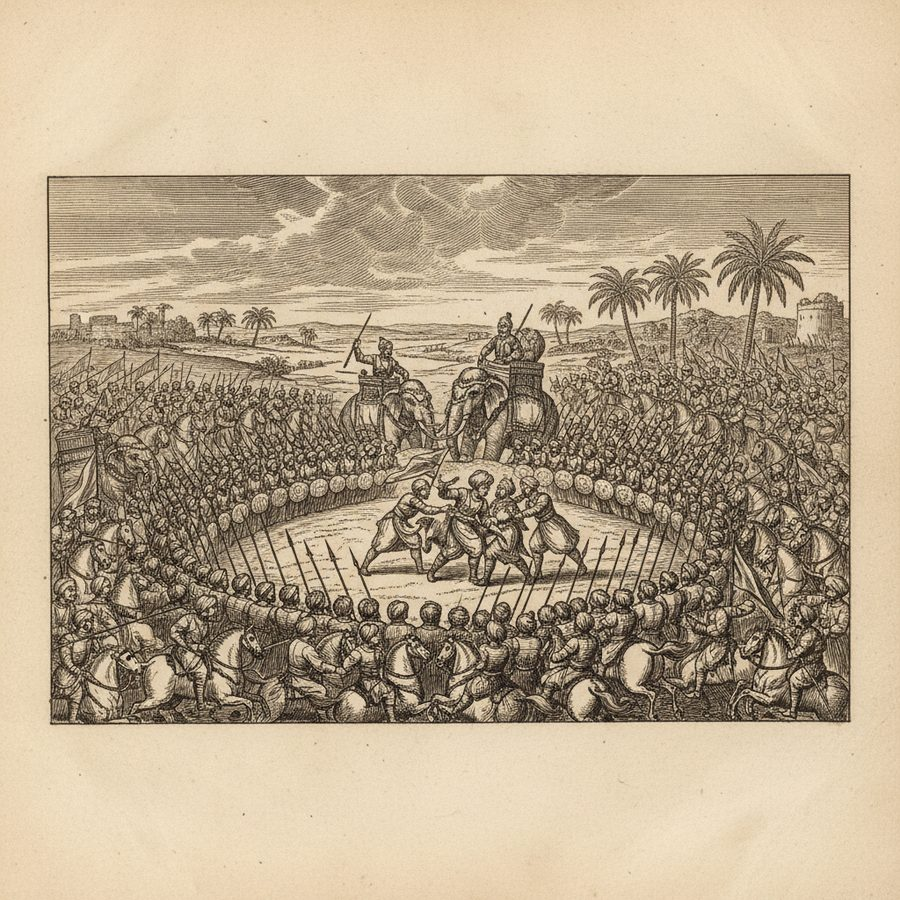
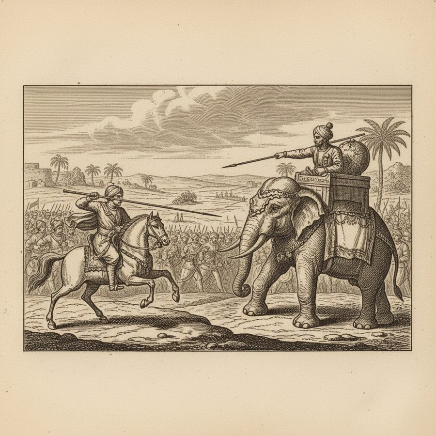
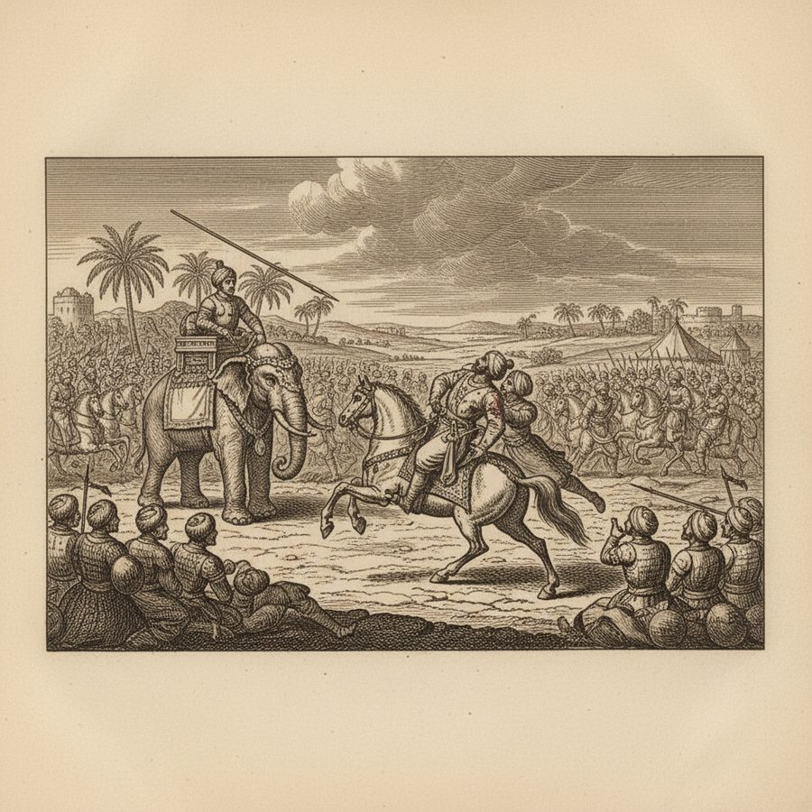
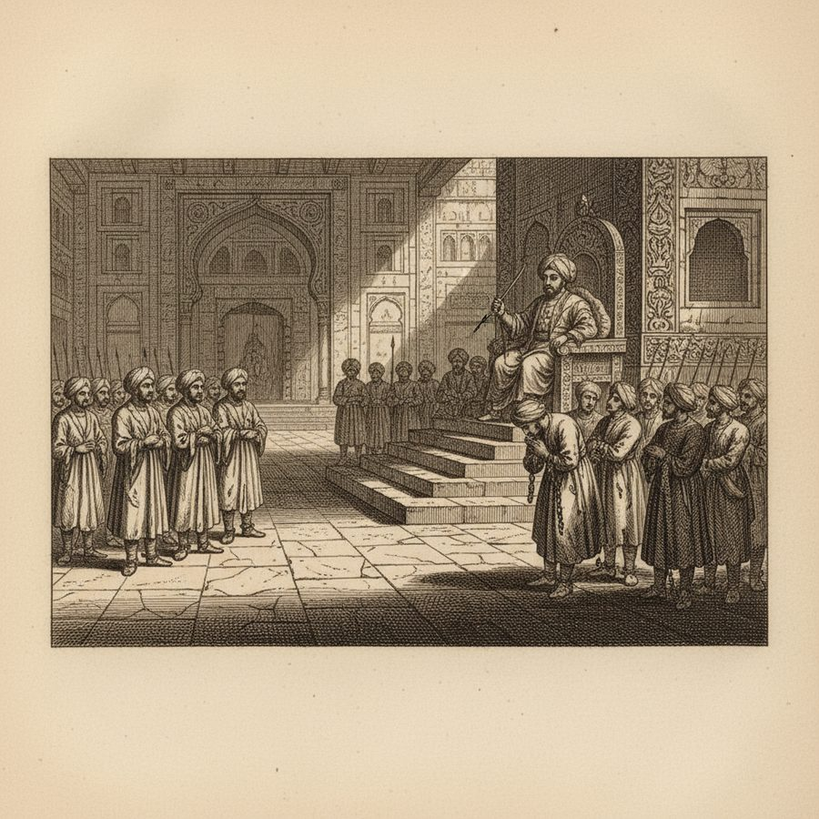
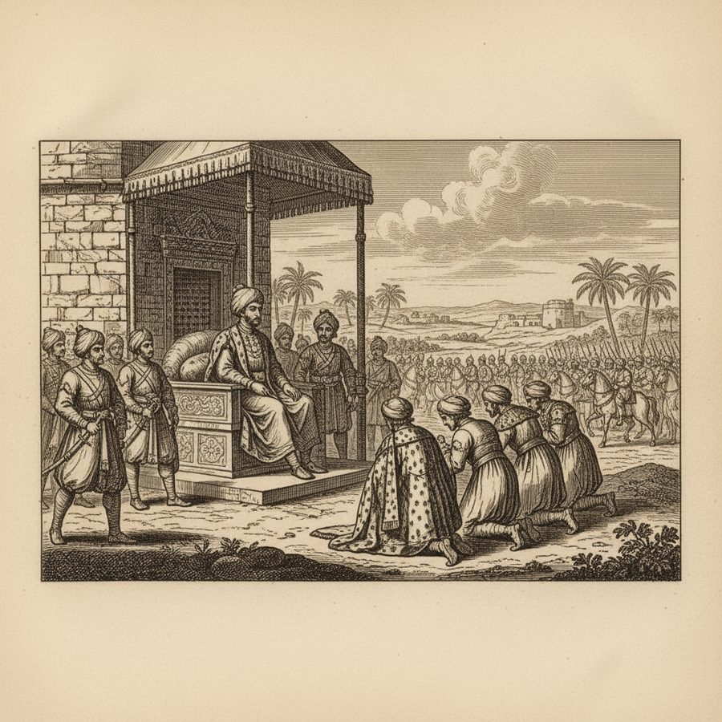
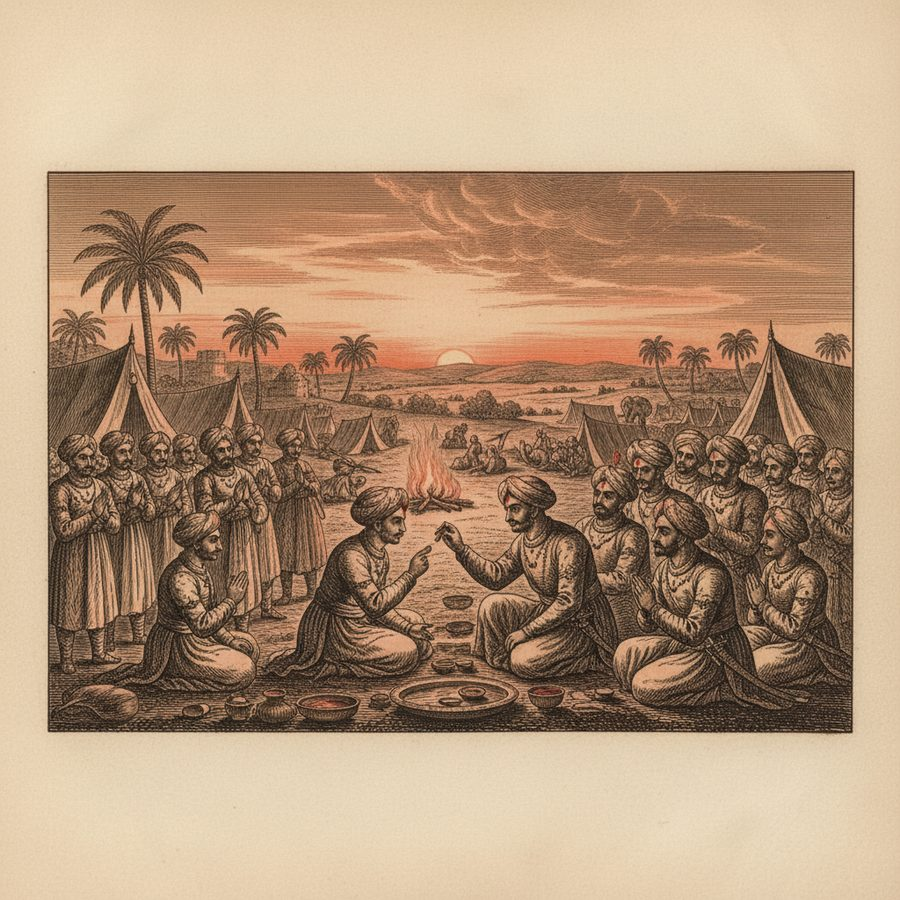
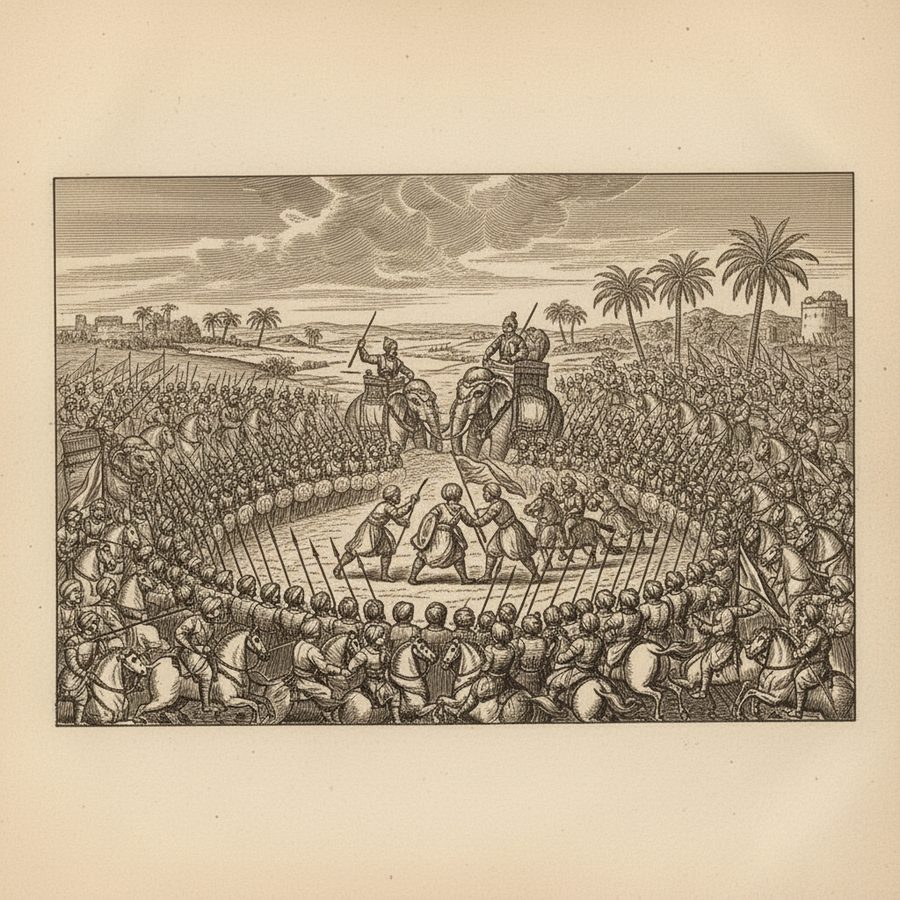
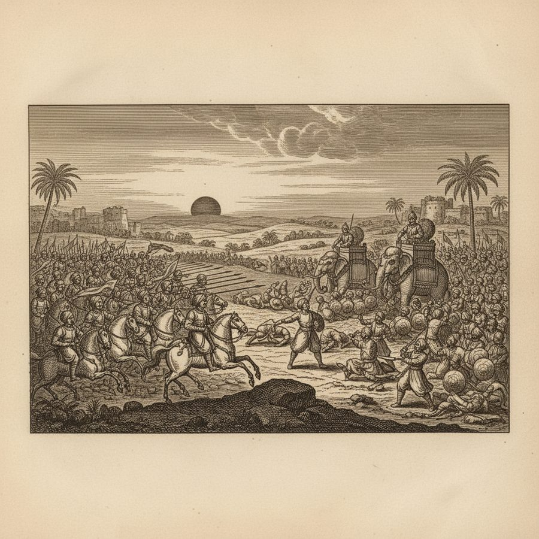
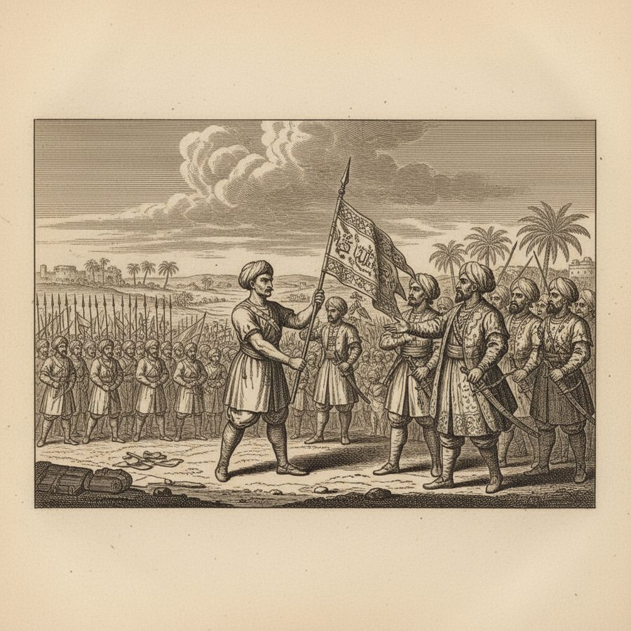

The Two Battles of Tarain — Defeat, Dishonour, and One Sunset Charge
Defeat, dishonour, and a sunset charge of twelve thousand steel-clad riders that opened India.
1191. When Mahummud Ghori marched into Hindostan, the Rajput confederacy under the Chauhan king — the book's 'Pittu Rai' (Prithviraj) — met him near Thanesar with 200,000 horse and 3,000 elephants. The Sultan's wings were outflanked and driven in until his army fought as a circle. Advised to flee, he struck the adviser and charged instead — and was spotted by the Raja of Delhi, who drove his elephant straight at him. Mahummud hurled his lance with such force it knocked out three of the elephant's back teeth; the Raja's spear went through his right arm. As he sank from his horse, a faithful servant leaped up behind him and carried him from the field. The rout was pursued for forty miles. Back in Ghor, the Sultan publicly disgraced every Omrah who had deserted him. 1192. A sage petitioned him: let the disgraced Omrahs wipe away their stains. He sent for them, robed them in honour, and returned to the very same field — where Pittu Rai now waited with 300,000 Rajput horse, 3,000 elephants and 150 Rajas who had sworn their war-oaths with the tica on their foreheads. All day Mahummud attacked by divisions, wheeling off in feigned retreats, 'deluding them with a security of victory.' Then, as the sun touched the west, he put himself at the head of 12,000 steel-clad horse and made one resolute charge: 'this prodigious army, once shaken, like a great building, was lost in its own ruins.' The Raja of Delhi fell in the field; Pittu Rai was taken in the pursuit and put to death; Ajmer was stormed. The Sultan left his slave-general Cuttub ul dien Abeik behind with an army — the seed from which the whole Delhi Sultanate would grow.
Figures: Sultan Shab ul dien Mahummud Ghori, Pittu Rai (Prithviraj Chauhan), Candi Rai, Raja of Delhi, Cuttub ul dien Abeik (Qutbuddin Aibak)
The story as a comic









Why it stands out
Tarain (1191–92) is the hinge of Indian history — the moment northern India opened to the Delhi Sultanate. The book gives it as a two-act drama: a king who loses everything except his nerve in act one, and returns in act two with disgraced officers hungry for redemption and a tactical masterpiece of feigned retreat. The single combat — three elephant teeth knocked out by a lance — is the kind of detail only old chronicles keep.